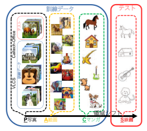

ディープラーニングの心理学的解釈 (心理学特講IIIA)¶
注意と告知¶
- ブラウザは Chrome です。実習に不都合が生じます。
- 最低一度は質問，発言をしてください。
- こまめに反応を返してください。顔出しもお願いします。
- 本日は（から？）ゲスト（もぐり？）の方が参加されます。
- 駒澤 c-learning の掲示板だと参加者を追加できません。だから別の方法を考える必要があります。Google classroom かな？
- アルバイト募集します。この授業に関連した知識を生かした文章校正の仕事です。詳細は連絡をお願いします。
前回の復習¶
- ディープラーニング 深層学習,
- 畳込み演算って何？
- カーネルサイズ
- プーリング
- ストライド
- パディング
本日の目標¶
- 最小二乗法から誤差逆伝播法へ。誤差関数，損失関数，目的関数，勾配降下法 (ブラインド ハイカー アナロジー)。 信用割当問題。勾配消失問題。
- 標準正則化理論。制約付き最適化。変分原理。オイラー=ラグランジェ方程式
- 画像切り分け
本日の実習¶
デモ¶
畳み込み演算を利用したニューラルネットワーク¶
ネオコグニトロンの概略図(Fukushima, 1979)
LeNet5 (LeCun, 1998)¶

LeCun (1998) より
AlexNet (Krizensky, et al., 2012)¶

Krzensky et al (2012) より
GooLeNet (Inception) (Szegedy et. al, 2014)¶

イメージネットコンテスト，アレックスネットの出力にみる問題点¶


アレックスネットの結果: 画像のすぐ下の英単語は正解ラベルを表す。Krizensky et. al (2012) Fig. 4 より。
ピンク色は正解ラベルの確率を表す。ブルーは不正解ラベル判断確率を表している。
チェリーが正解であるが，画像を見る限り，第一回答候補のダルマチアンを正解だと考えても問題は無いと考えられる。
画像切り出し¶
- 物体位置
- 物体認識 object recognition
- 意味的切り出し semantic segmentation
- 対象切り出し instance segmentation
- 特徴点抽出 keypoint
- パノプティック切り出し

Dang and Ha (2017) より
転移学習¶

- 活性化関数¶
標準正則化理論と条件付き最適化¶